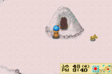
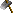
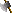
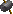
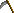

Quando o Inverno Chega o Lago da Mother's Hills congela. Voce pode andar e atravessar pelo gelo e entrar na mina do lago. Voce nao encontrara minerio nesta mina, mas voce vai achar muitas joias belas! Nao esqueca de checar atras da mina antes de voce entrar. Tem um Power Berry atras dela. Esta mina guarda as "ferramentas amaldicoadas"; itens super poderosos que voce pode usar para recolocar seu equipamento da fazenda existente. As ferramentas amaldicoadas nao vao aparecer ate todas as suas ferramentas estiverem no nivel de Mystrile. Embora e aleatorio se voce vai encontrar elas! Os diferentes tipos de ferramentas estao escondidos debaixo do chao em andares especificos. Voce tera que cavar pelo andar e fique a espera de um milagre ate encontrar uma, Se nao encontrar, lembre-se de salvar seu jogo antes de descer no andar e entao carregar o save, desca as escadas e comece a cavar por todo lado novamente. Quando voce encontrar uma ferramenta amaldicoada nao equipe ao menos que esteja pronto!!! As ferramentas serao nomeadas e uma vez equipada voce nao pode remove-la de voce mesmo. Voce vai precisar da ajuda do padre Carter ele so pode retirar quando ele esta no confessionario. Se voce pagar 1000G ele vai tirar a ferramenta equipada pra voce e colocala de volta em seu inventario. Quando voce estiver pronto para comecar com as ferramentas amaldicoadas entao voce vai precisar de ajuda de todo jeito (Veja "Aprimoramentos") mas se voce planeja continuar a explorar a mina do lago depois de encontrar uma ferramenta entao nao equipe. As ferramentas alamaldicoadas estao basicamente no nivel 6 de ferramentas e tem mais forca do que a de Mystrile no nivel 5. |
 |
| Onde estao as ferramentas amaldicoadas (Andar) | |
| Vara amaldicoada / Cursed Fishing Rod | Andar 29 |
| Enxada Amaldicoada / Cursed Hoe | Andar 39 |
| Machado Amaldicoado / Cursed Ax | Andar 49 |
| Martelo Amaldicoado / Cursed Hammer | Andar 59 |
| Regador Amaldicoado / Cursed Watering Can | Andar 69 |
| Foice Amaldicoada / Cursed Sickle | Andar 79 |